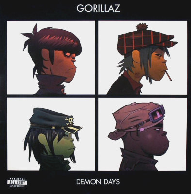

Mo grupo favorito: Gorillaz
Gorillz es una banda ficticia compuesta por cuatro músicos. Su universo ficticio se presenta a través de los videoclips animados de sus canciones. Es un grupo con muchos géneros, principalmente Hip Hop y Rock Indie
Este es su album más famoso: Demon Dayz:

Sus integrantes son